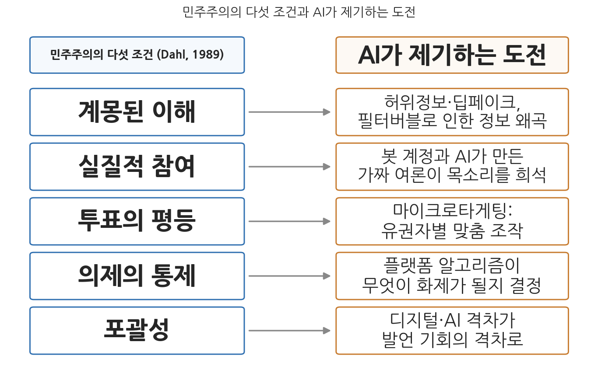
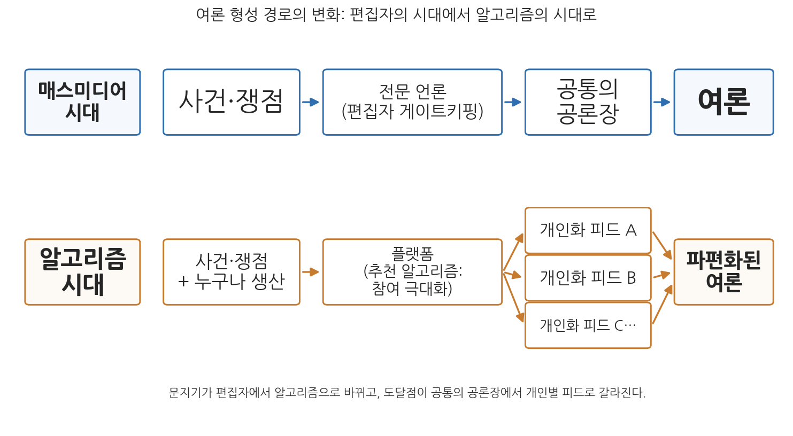

6주차 1차시. AI와 민주주의 (1): 민주적 가치와 AI
향후 2년간 세계가 직면할 가장 심각한 위험은 허위정보와 조작정보다. (세계경제포럼, 『글로벌 리스크 보고서 2024』의 전문가 조사 결과)
이 장에서 배우는 것
2024년 1월 21일, 미국 뉴햄프셔주의 민주당 지지자 수천 명에게 전화가 걸려 왔다. 수화기 너머에서 들려온 것은 조 바이든(Joe Biden) 당시 대통령의 목소리였다. "이번 화요일 예비선거에는 투표하지 마십시오. 여러분의 표는 11월 본선거를 위해 아껴 두어야 합니다." 물론 바이든은 그런 전화를 건 적이 없다. 그것은 생성형 AI로 만든 가짜 음성, 즉 딥페이크(deepfake)였다. 제작을 지시한 정치 컨설턴트가 음성 합성에 들인 비용은 단돈 150달러였다. 150달러로 현직 대통령의 목소리를 훔쳐 수천 명의 유권자에게 "투표하지 말라"고 말할 수 있는 시대. 이 사건은 AI가 민주주의의 심장부인 선거에 얼마나 값싸고 쉽게 개입할 수 있는지를 보여 준 상징적 장면이 되었다.
지금까지 우리는 효율성(2주차), 투명성(3주차), 책임성(4주차), 형평성(5주차)이라는 렌즈로 AI와 행정을 보아 왔다. 이 가치들은 주로 "정부가 AI를 잘 쓰고 있는가"를 묻는 렌즈였다. 이번 주의 렌즈인 민주성은 질문의 방향이 다르다. 정부 안의 AI만이 아니라, 사회 전체에 퍼진 AI가 민주주의라는 체제 자체의 작동 조건을 어떻게 바꾸는가를 묻는다. 여론은 어떻게 형성되고, 선거는 공정하게 치러지며, 권력은 분산되어 있는가. 이 장은 그 물음을 네 절에 걸쳐 다룬다. 구체적으로 다음을 배운다.
- 민주주의를 지탱하는 조건들은 무엇이며, AI는 그 조건 하나하나에 어떤 도전을 제기하는가
- 추천 알고리즘은 여론 형성의 경로를 어떻게 바꾸었는가: 필터버블과 에코챔버 논쟁
- 딥페이크와 허위정보는 2024-2026년의 실제 선거에서 어떻게 나타났고, 각국은 어떻게 대응했는가
- AI 시대의 권력 집중 문제: 플랫폼 기업의 권력과 국가의 권력
이 장은 하나의 질문을 따라 전개된다. "AI는 민주주의가 작동하기 위한 조건들을 어떻게 흔들고 있는가?"
1.1 민주주의의 조건을 이론적으로 정리하고 AI가 제기하는 도전을 조건별로 매핑한다 → 1.2 그 조건 중 "계몽된 이해"를 흔드는 첫 번째 힘, 추천 알고리즘과 여론 형성의 문제를 본다 → 1.3 두 번째 힘, 허위정보와 딥페이크가 실제 선거를 흔든 2024-2026년의 사례들을 읽는다 → 1.4 이 모든 문제의 배후에 있는 구조적 문제, 곧 권력 집중을 플랫폼과 국가 양쪽에서 따진다.
1.1 민주주의의 조건과 AI
민주주의는 무엇으로 지탱되는가
민주주의(democracy) 사상의 초석은 국민주권의 원리다. 정치적 권력은 궁극적으로 개인에게 있으며, 정부의 권한은 정치 공동체 구성원들의 동의(consent)에서 나온다. 존 로크(John Locke)는 이를 사회계약의 언어로 정식화했다. 개인은 생명, 자유, 행복추구와 같은 양도할 수 없는 권리를 보호받는 대가로 일부 자유를 제한받으며, 통치의 정통성은 통치받는 자의 동의와 개인의 권리 보호에 근거한다. 국민주권과 나란히 서는 또 하나의 기둥은 시민들 간의 평등이다. 모든 개인이 공정하고 차별 없이 대우받으며 주권 국가의 동등한 구성원으로 인정받아야 한다. 그리고 이 구조를 떠받치는 것이 법치주의, 인권 존중과 같은 일련의 규범과 가치다. 민주주의는 제도이기 이전에, 개인 주권과 정치적 평등을 긍정하고 공고히 하는 규범의 체계다.
역사적으로 민주주의는 다양한 형태로 진화해 왔고, 현대 국가의 지배적 형태는 국민의 대표가 정치권력을 행사하는 대의제 민주주의다. 그런데 최근 수십 년간 대의제의 책임성과 포용성 부족이 지적되면서 참여(participation)와 공론(discourse)이 강조되는 추세다. 참여민주주의는 정치적 의사결정에 시민이 직접 참여할 것을 강조하고(Pateman, 1970), 숙의민주주의는 정당한 의사결정의 기초로서 시민들의 공적 숙의(public deliberation)와 집단적 추론에 초점을 둔다(Habermas, 1996; Gutmann & Thompson, 2004). 이 두 흐름은 다음 차시(6주차 2차시)의 주인공이므로, 여기서는 민주주의의 이상을 가장 체계적으로 정리한 틀 하나를 빌려 오자.
정치학자 로버트 달(Robert A. Dahl)은 어떤 집단적 의사결정 과정이 민주적이라 불리려면 갖추어야 할 이상적 기준들을 제시했다(Dahl, 1989). 실질적 참여(effective participation), 투표의 평등(voting equality), 계몽된 이해(enlightened understanding), 의제의 통제(control of the agenda), 그리고 포괄성(inclusiveness)이다. 모든 구성원이 자신의 견해를 알릴 실질적 기회를 갖고, 표결에서 동등하게 취급되며, 쟁점을 이해할 충분한 기회를 얻고, 무엇을 의제로 다룰지를 스스로 통제하며, 성인 구성원 누구도 배제되지 않아야 한다는 것이다. 현실의 어떤 나라도 이 기준을 완전히 충족하지는 못하지만, 이 기준들은 현실의 민주주의가 얼마나 민주적인지 잰다는 점에서 유용한 잣대가 된다.
다섯 조건에 대한 다섯 개의 도전
AI가 민주주의에 제기하는 문제를 두서없이 나열하는 대신, 달의 다섯 조건에 하나씩 대응시켜 보면 문제의 지도가 선명해진다.

그림 6-1을 읽는 법은 이렇다. 왼쪽 열이 달이 제시한 민주주의의 다섯 조건이고, 오른쪽 열이 각 조건에 대해 AI가 제기하는 대표적 도전이며, 화살표가 그 대응 관계다. 이 그림에서 알 수 있는 것은 AI의 도전이 민주주의의 어느 한 지점이 아니라 조건 전체에 걸쳐 있다는 사실이다. 하나씩 보자.
첫째, 계몽된 이해에 대한 도전이다. 시민이 쟁점을 이해하려면 신뢰할 수 있는 정보가 공유되어야 하는데, 추천 알고리즘에 의한 정보 환경의 개인화(1.2절)와 생성형 AI가 낮춘 허위정보 제작 비용(1.3절)은 바로 이 조건을 겨냥한다. 둘째, 실질적 참여에 대한 도전이다. 봇(bot) 계정과 AI가 만든 가짜 여론은 진짜 시민의 목소리를 희석시키고, 온라인 공론장에서 누가 진짜 사람인지조차 알기 어렵게 만든다. 셋째, 투표의 평등에 대한 도전이다. 유권자 데이터를 분석해 개인별 약점에 맞춘 메시지를 보내는 마이크로타게팅(microtargeting)은 형식적으로 평등한 한 표를 정보 조작에 대한 취약성의 차이로 갈라놓는다. 넷째, 의제의 통제에 대한 도전이다. 무엇이 화제가 되고 무엇이 묻히는가를 이제 상당 부분 플랫폼의 알고리즘이 결정한다면, 의제설정 권력은 시민에게서 소수 기업으로 옮겨 간 셈이다(1.4절). 다섯째, 포괄성에 대한 도전이다. 디지털 기술과 AI에 접근하고 그것을 다룰 수 있는 능력의 격차는 정치적 발언 기회의 격차로 이어진다(이 문제는 다음 차시에서 디지털 리터러시와 함께 다룬다).
민주주의, 행정, 그리고 AI
민주주의의 조건이 흔들리는 것이 왜 행정학의 문제인가. 국민주권, 자유와 평등 같은 민주주의의 핵심 개념은 행정에 대해 국민의 요구와 의지에 반응하고, 공평한 서비스 제공을 보장하며, 행정 과정에 시민의 참여를 촉진할 것을 요구한다. 반응성, 투명성, 책임성, 윤리적 행동과 같은 민주적 규범은 관료가 의무를 수행하고 대중의 신뢰를 유지하는 지침이 된다. 행정이론과 민주주의의 관계도 시대에 따라 달랐다. 우드로 윌슨(Woodrow Wilson)의 고전적 행정이론은 효율성, 전문성, 실적제를 앞세웠는데, 이는 자격을 갖춘 사람들이 정부를 운영하게 하여 공익에 봉사하도록 하려는 것이었다. 1980년대의 신공공관리(NPM)는 민간 부문의 관리 모델을 들여와 효율성을 추구했고, 그 과정에서 때때로 책임이나 시민적 의무 같은 전통적 공공가치보다 "사업적(businesslike)" 관점을 앞세웠다. 반면 포스트모더니즘 계열의 행정이론은 관료제와 대의제의 한계를 지적하며 시민의 참여와 의사소통을 강조했다. 이론의 이런 역사적 진화는 사회적 우선순위의 변화를 반영하는 동시에, AI의 등장 같은 변화가 행정학에서 어떻게 이해될지를 좌우하는 배경이 된다.
행정과 민주주의를 잇는 또 하나의 고리는 공익(public interest)이다. 공익은 민주주의 이론과 행정 모두에서 핵심 개념으로, 의사결정과 정책 수립의 원칙이자 관료 행동의 기준으로 작동한다. 무엇이 공익인지를 정의하는 방식은 과정설과 실체설로 갈리고 상충하는 이해관계 속에서 그 내용을 확정하기는 어렵지만, 어느 입장을 따르든 정치 공동체의 시민으로서 공유하는 이익이 존재한다면 그것은 공정성, 형평성 같은 민주적 가치들과 본질적으로 연결되어 있다. 그렇다면 AI가 여론 형성과 선거라는 공익 확인의 통로 자체를 왜곡할 때, 행정이 봉사해야 할 "국민의 의지"가 무엇인지부터 흐려진다. 이것이 이번 주의 문제의식이다.
"AI가 민주주의를 파괴한다"는 단정은 "AI가 민주주의를 완성한다"는 낙관만큼이나 조심해야 한다. 기술이 사회의 운명을 일방적으로 결정한다고 보는 사고를 기술결정론이라 하는데, 이 장에서 볼 사례들은 기술 그 자체보다 기술을 둘러싼 제도, 시장 구조, 정치적 이용이 결과를 갈랐음을 보여 준다. 같은 추천 알고리즘도 어떤 규제와 시민적 역량 아래 놓이는가에 따라 다른 결과를 낳는다. 질문은 "AI가 민주주의에 좋은가 나쁜가"가 아니라 "어떤 조건에서 AI가 민주주의의 조건을 잠식하거나 강화하는가"여야 한다.
1.2 알고리즘과 여론 형성
여론 형성 경로의 구조 변동
민주주의에서 여론은 단순한 선호의 합계가 아니라, 시민들이 서로의 의견을 듣고 다듬는 과정에서 형성되는 것이다. 하버마스(Jürgen Habermas)가 공론장(public sphere)이라 부른 이 공간, 곧 시민들이 공적 문제를 자유롭게 토론하며 여론을 형성하는 사회적 공간은 오랫동안 신문, 방송 같은 매스미디어를 중심으로 조직되어 왔다. 매스미디어 시대의 여론 형성 경로는 단순했다. 사건이 일어나면 전문 언론이 편집자의 판단(게이트키핑)을 거쳐 보도하고, 대다수 시민이 대체로 같은 뉴스를 보며, 그 공통의 정보 기반 위에서 여론이 형성되었다. 이 구조에는 결함이 많았지만(소수 언론사의 편향, 엘리트 중심성), 적어도 "무엇이 쟁점인가"에 대한 공통 인식은 만들어 냈다.
소셜미디어와 추천 알고리즘은 이 경로를 근본적으로 재편했다. 이제 많은 시민이 뉴스를 언론사의 지면이 아니라 플랫폼의 피드(feed)로 접한다. 그리고 그 피드에 무엇을 올릴지는 편집자가 아니라 알고리즘이 정한다. 추천 알고리즘의 원리는 수식 없이도 이해할 수 있다. 플랫폼의 수익은 이용자가 머무는 시간과 광고 노출에서 나오므로, 알고리즘은 각 이용자가 클릭하고, 오래 보고, 공유할 확률이 높은 콘텐츠를 예측해 우선 배치하도록 학습된다. 문제는 사람의 주의를 붙드는 콘텐츠가 대체로 차분한 검증 기사가 아니라 분노, 공포, 확신을 자극하는 콘텐츠라는 점이다. 알고리즘은 거짓을 퍼뜨리라고 설계된 것이 아니라 참여(engagement)를 극대화하라고 설계되었을 뿐인데, 그 부산물로 자극적이고 극단적인 내용이 증폭되기 쉬운 구조가 만들어진다.

그림 6-2를 읽는 법은 이렇다. 위 줄이 매스미디어 시대의 여론 형성 경로이고 아래 줄이 알고리즘 시대의 경로이며, 각 단계에서 누가 정보의 문지기 역할을 하는지가 상자 안에 적혀 있다. 이 그림에서 알 수 있는 것은 두 가지다. 첫째, 문지기가 전문 언론(편집자)에서 플랫폼(알고리즘)으로 바뀌었다. 둘째, 도달점이 "공통의 공론장"에서 "개인별로 다른 피드"로 바뀌었다. 같은 나라에 살면서도 서로 전혀 다른 정보 세계에 사는 일이 구조적으로 가능해진 것이다.
필터버블(filter bubble)은 활동가 엘리 패리저(Eli Pariser)가 2011년 같은 제목의 책에서 제안한 개념으로, 알고리즘이 이용자의 과거 행동을 학습해 그가 좋아할 정보만 걸러 보여 준 결과, 개인이 자기만의 정보 거품에 갇히는 현상을 가리킨다. 걸러내는 주체가 알고리즘이라는 점이 핵심이다. 에코챔버(echo chamber, 반향실)는 법학자 캐스 선스타인(Cass Sunstein)이 일찍부터 경고한 현상으로(Sunstein, 2017), 비슷한 생각을 가진 사람들끼리 모여 서로의 의견을 메아리처럼 되울리면서 기존 신념이 강화되고 극단화되는 현상이다. 이쪽은 사람들의 선택적 어울림이 주된 동력이다. 두 개념은 자주 섞여 쓰이지만, 전자는 기술의 문제, 후자는 집단 역학의 문제에 무게가 있다.
필터버블 논쟁: 이론과 실증 사이
필터버블과 에코챔버는 직관적으로 설득력이 있고, 정치 양극화의 시대에 널리 받아들여졌다. 그러나 실증 연구의 그림은 그보다 복잡하다는 점을 알아 두어야 한다. 페이스북 데이터를 분석한 초기 연구는 이용자가 반대 성향의 콘텐츠를 덜 보게 되는 데에는 알고리즘의 선별보다 이용자 자신의 선택(누구와 친구를 맺고 무엇을 클릭하는가)이 더 크게 작용한다고 보고했다(Bakshy, Messing & Adamic, 2015). 2020년 미국 대선 시기 메타(Meta)와 독립 연구진이 수행한 대규모 공동 실험들에서는, 이용자의 피드를 알고리즘 추천에서 시간순 배열로 바꾸어도 3개월의 실험 기간 동안 정치적 태도의 양극화가 유의미하게 줄지 않았다(Guess et al., 2023). 알고리즘을 끄는 것만으로 양극화가 풀리지는 않는다는 뜻이다.
그렇다고 안심할 일은 아니다. 같은 연구들은 알고리즘이 이용자의 플랫폼 체류 시간과 참여를 크게 좌우하며, 정치 정보의 상당 부분이 이념적으로 분리된 회로를 따라 흐른다는 점도 확인했다. 그리고 알고리즘의 증폭 구조가 특정 국면에서 위험하게 작동한 사례는 실제로 존재한다. 아래 사례가 그것이다.
2021년 메타(당시 페이스북)의 프로덕트 매니저였던 프랜시스 하우겐(Frances Haugen)은 수만 쪽의 내부 문서를 유출했고, 월스트리트저널이 이를 "페이스북 파일(The Facebook Files)" 연속 보도로 공개했다. 문서에 따르면 페이스북은 2018년 "의미 있는 사회적 상호작용"을 늘린다는 명분으로 뉴스피드 알고리즘을 개편해 댓글과 공유 등 반응을 많이 끌어내는 게시물에 가중치를 주었는데, 회사 내부 연구진은 이 개편이 분노를 유발하는 자극적 콘텐츠를 체계적으로 증폭시킨다는 사실을 확인하고 있었다. 유럽의 일부 정당들은 알고리즘이 부정적이고 공격적인 메시지에 보상을 주기 때문에 온건한 콘텐츠로는 도달률이 나오지 않는다고 페이스북 측에 항의하기도 했다. 하우겐은 2021년 10월 미국 상원 청문회에서 "회사는 문제를 알면서도 성장을 우선했다"고 증언했고, 이 폭로는 이후 EU 디지털서비스법(DSA) 등 플랫폼 규제 입법의 주요 근거 자료가 되었다.
이 사례가 보여 주는 것은 두 가지다. 첫째, 알고리즘의 여론 왜곡은 음모가 아니라 사업 모델의 부산물이다. 참여를 극대화하도록 최적화된 시스템은 누가 악의를 품지 않아도 극단적 콘텐츠를 밀어 올린다. 둘째, 그 작동은 외부에서 보이지 않았고 내부 고발과 문서 유출이 있고서야 드러났다. 3주차에서 본 알고리즘 불투명성 문제가 민간 플랫폼에서는 한층 심각한 형태로 나타나는 것이다. 정부의 알고리즘에는 정보공개와 감사라는 통로라도 있지만, 사기업의 추천 알고리즘은 영업비밀의 벽 뒤에 있다.
여기에 여론 형성의 오래된 심리 기제가 겹쳐진다. 침묵의 나선(spiral of silence) 이론에 따르면 사람들은 자신의 의견이 소수라고 느끼면 고립이 두려워 침묵하고, 그 침묵이 다시 다수 의견의 지배를 강화한다(Noelle-Neumann, 1974). 알고리즘이 증폭한 목소리가 실제보다 커 보이고 봇 계정이 가짜 다수를 연출할 수 있는 환경에서, 시민이 지각하는 "여론의 기후"는 실제 여론과 어긋나기 쉽다. 여론조사와 공청회를 통해 민심을 읽어야 하는 행정의 입장에서, 온라인 여론이 과연 국민의 의사를 대표하는가라는 질문은 이제 상시적인 검증 과제가 되었다.
1.3 허위정보와 선거
탈진실 정치와 생성형 AI
허위정보 문제 자체는 새롭지 않다. 새로운 것은 규모와 비용이다. 생성형 AI는 그럴듯한 텍스트, 이미지, 음성, 영상을 만드는 비용을 사실상 0에 가깝게 낮추었다. 앞서 본 뉴햄프셔 로보콜의 음성 제작비가 150달러였다는 사실이 이를 압축한다. 감정적 호소와 가짜뉴스가 사실과 이성을 압도하는 풍조를 가리키는 탈진실(post-truth) 정치라는 말이 있는데, 숙의민주주의 연구자들은 이를 "숙의민주주의의 정반대"라고까지 부른다(Bächtiger et al., 2018). 딥페이크는 탈진실 정치에 산업적 도구를 쥐여 준 셈이다.
더 교묘한 문제도 있다. 법학자 체스니와 시트론은 딥페이크의 진짜 위험이 가짜를 진짜로 믿게 만드는 것 못지않게, 진짜를 가짜라고 부인할 수 있게 만드는 데 있다고 지적하고 이를 거짓말쟁이의 배당(liar's dividend)이라 불렀다(Chesney & Citron, 2019). 무엇이든 조작될 수 있는 세상에서는 실제 비리가 녹음된 음성조차 "딥페이크"라는 한마디로 부인할 수 있다. 허위정보의 궁극적 피해는 특정한 거짓을 믿게 되는 것이 아니라, 아무것도 믿을 수 없게 되는 것, 곧 공유된 사실 기반의 붕괴다.
2024년은 이 우려가 실험대에 오른 해였다. 세계 인구의 절반 가까이가 투표하는 "슈퍼 선거의 해"였기 때문이다. 전조는 이미 있었다. 2023년 9월 슬로바키아 총선에서는 투표 이틀 전, 유력 후보가 언론인과 부정선거를 모의하는 것처럼 조작된 가짜 음성 파일이 유포되었다. 선거 직전 보도가 금지되는 기간이어서 반박이 어려운 시점을 노린 것이었다. 그리고 2024년, 우려는 여러 나라에서 현실이 되었다. 대표적인 두 사례를 읽어 보자.
2024년 1월 21일, 뉴햄프셔주 민주당 예비선거(1월 23일)를 이틀 앞두고 바이든 대통령의 목소리를 복제한 자동전화(robocall)가 유권자 수천 명에게 발송되어 예비선거 불참을 종용했다. 발신자를 위장한 이 전화는 정치 컨설턴트 스티브 크레이머(Steve Kramer)가 기획한 것으로, 그는 음성 합성 도구로 가짜 음성을 만들게 하고 150달러를 지불했다. 미국 연방통신위원회(FCC)는 2024년 2월 AI 생성 음성을 이용한 로보콜이 기존 전화소비자보호법상 불법임을 선언했고, 같은 해 9월 크레이머에게 600만 달러의 벌금을 부과했다. 통화를 전송한 통신사 링고텔레콤도 100만 달러의 합의금을 냈다. 그러나 2025년 6월 뉴햄프셔주 법원의 배심원단은 크레이머의 유권자 억압 등 주법 위반 혐의 전부에 무죄 평결을 내렸다. 크레이머가 "AI의 위험을 경고하려 했다"고 주장한 가운데, 기존 형법 조항으로 AI 선거 조작을 처벌하기가 쉽지 않음이 드러난 것이다. 크레이머는 FCC 벌금도 내지 않겠다고 밝혔다.
2024년 11월 24일 루마니아 대선 1차 투표에서, 여론조사 지지율이 미미했던 무소속 극우 후보 컬린 제오르제스쿠(Călin Georgescu)가 1위에 오르는 이변이 일어났다. 그의 부상은 틱톡(TikTok)에서의 폭발적 확산에 힘입은 것이었다. 12월 4일 루마니아 정보 당국이 기밀 해제한 문서는 "국가 행위자"가 조직한 것으로 보이는 대규모 온라인 영향 공작, 곧 조직적 계정 운영과 알고리즘 증폭을 통한 후보 밀어주기 캠페인이 있었다고 밝혔고, 배후로 러시아가 지목되었다. 헌법재판소는 12월 6일, 2차 투표를 이틀 앞두고 선거 전체를 무효화했다. 선거 과정의 온라인 조작을 이유로 민주주의 국가가 대선을 통째로 취소한 초유의 사건이었다. EU 집행위원회는 12월 17일 틱톡이 선거 관련 시스템 위험을 제대로 평가·완화했는지에 대해 디지털서비스법(DSA) 위반 여부 정식 조사 절차를 개시했다. 제오르제스쿠는 수사 대상이 되어 2025년 3월 재선거 출마가 금지되었고, 2025년 5월 치러진 재선거에서는 친EU 성향의 니쿠쇼르 단(Nicușor Dan)이 결선에서 53.6%를 얻어 당선되었다. 무효화 결정 자체가 격렬한 항의 시위와 "사법 쿠데타" 논쟁을 낳았다는 점까지 포함해, 이 사건은 알고리즘 시대 선거 방어의 딜레마를 압축한다.
두 사례가 보여 주는 것을 정리하자. 첫째, AI 선거 개입은 가설이 아니라 실행된 현실이며, 그 비용은 낮고 파급은 크다. 둘째, 사후 대응은 언제나 곤혹스럽다. 미국처럼 표현의 자유 전통이 강한 나라에서는 처벌이 무죄 평결로 끝났고, 루마니아에서는 선거 무효화라는 극약 처방이 민주주의 절차의 정당성 자체를 훼손했다는 논란을 낳았다. 허위정보 대응이 어려운 근본 이유는 그것이 민주주의의 다른 가치인 표현의 자유와 정면으로 긴장하기 때문이다. 무엇이 "허위"인지 국가가 판정하게 하는 순간, 그 권한 자체가 남용될 수 있는 검열 권력이 된다.
한국의 대응: 사전 금지라는 선택
한국은 이 문제에 대해 세계적으로 이른 편에 속하는 강경한 입법으로 대응했다. 2023년 12월 개정된 공직선거법 제82조의8은 선거일 전 90일부터 선거일까지, 선거운동을 위해 AI 기술 등으로 만든 실제와 구분하기 어려운 가상의 음향·이미지·영상(딥페이크 영상 등)을 제작·유포하는 행위를 전면 금지했다. 위반하면 7년 이하의 징역 또는 1천만 원 이상 5천만 원 이하의 벌금에 처한다. 90일 이전이라도 딥페이크를 이용한 선거운동에는 AI로 만든 가상의 정보라는 사실을 표시해야 한다.
개정 공직선거법이 적용된 첫 선거인 2024년 4월 제22대 총선에서 중앙선거관리위원회는 딥페이크 이용 선거운동 게시물 389건을 적발해 삭제 조치했다(시행 첫 한 달 동안에만 129건). 2025년 6월 3일 제21대 대선에서는 삭제 요청이 10,510건으로 급증했고 고발 3건이 이루어졌다. 2026년 6월 3일 제9회 전국동시지방선거에서는 5월 31일 기준 삭제 요청 10,368건, 고발 2건, 수사의뢰 1건, 경고 45건이 집계되어 대선 수준의 규모가 이어졌으며, 경남도지사 선거에서는 후보 간에 딥페이크 영상 제작·배포 의혹을 둘러싼 고발 공방까지 벌어졌다(시사저널, 2026.6.1.). 대응 기술도 함께 동원되었다. 선관위는 2025년 대선을 앞두고 AI 기반 딥페이크 감별 시스템을 도입했고, 행정안전부와 국립과학수사연구원이 공동 개발한 딥페이크 탐지 모델이 2026년 지방선거에 활용되었다. 다만 자동 탐지의 정확성 한계, 단속 인력과 예산의 부족, 그리고 90일 전면 금지가 풍자와 창작까지 위축시킨다는 과잉 입법 비판도 함께 제기되고 있다.
이 사례가 보여 주는 것은 명확하다. 첫째, 딥페이크 선거물의 규모는 한 번의 선거 주기 만에 수백 건에서 1만 건 대로 뛰었다. 생성 비용의 하락이 그대로 유통량의 폭증으로 이어진 것이다. 둘째, 사전 금지와 기술적 탐지를 결합한 한국형 대응은 미국식 사후 처벌보다 예방 효과가 크지만, 표현의 자유와의 긴장이라는 비용을 치른다. "선거는 보수적으로 관리해야 한다"는 논리와 "시대 흐름에 역행하는 전면 금지"라는 비판이 맞서는 지점이야말로, 민주주의의 가치들이 서로 충돌하는 현장이다.
1.4 권력 집중의 문제
플랫폼 권력: 사적 권력의 공적 기능
여론 형성과 선거를 둘러싼 문제들의 배후에는 더 구조적인 문제가 있다. 권력의 집중이다. 민주주의는 권력의 분산과 견제를 전제하는 체제인데, AI 시대의 권력 지형은 두 방향에서 집중을 향해 움직이고 있다.
첫 번째 방향은 플랫폼 기업으로의 집중이다. 앞 절들에서 보았듯, 수십억 인구가 무엇을 보고 무엇을 화제로 삼을지를 소수 글로벌 플랫폼의 알고리즘이 사실상 결정한다. 공론장이라는 공적 기능이 사기업의 사적 소유물 위에서 작동하게 된 것이다. 하버드의 사회학자 쇼샤나 주보프(Shoshana Zuboff)는 이용자의 행동 데이터를 수집·분석해 행동을 예측하고 나아가 유도하는 것을 사업 모델로 삼는 체제를 감시 자본주의(surveillance capitalism)라 명명했다(Zuboff, 2019). 이 진단의 타당성을 어디까지 받아들이든, 다음 사실들은 부인하기 어렵다. 첨단 AI 모델의 개발에는 막대한 데이터, 연산 자원, 자본이 필요하고, 이를 감당할 수 있는 기업은 세계적으로 소수다. 그 소수 기업이 검색, 소셜미디어, 클라우드, 그리고 생성형 AI 기반 모델까지 정보 생태계의 층위 전반을 수직적으로 장악해 가고 있다. 국가가 공공서비스에 AI를 도입할수록(2주차) 행정 인프라 자체가 이들 기업에 의존하게 되는 역설도 커진다.
플랫폼 권력이 특히 문제가 되는 이유는 그것이 전통적 권력과 달리 민주적 통제의 회로 바깥에 있기 때문이다. 언론사는 언론중재제도와 명예훼손 법리의 규율을 받고 방송사는 공적 규제를 받지만, 플랫폼은 오랫동안 "우리는 매체가 아니라 기술 회사"라는 논리로 편집 책임을 비켜 왔다. 알고리즘은 영업비밀이고, 본사는 대개 해외에 있으며, 이용자는 유권자가 아니라 고객이다. 선출되지 않았고 해임할 수도 없는 권력이 여론 형성의 인프라를 소유한 상황, 이것이 문제의 핵심이다.
국가 권력: 감시와 조작의 유혹
두 번째 방향은 국가로의 집중이다. AI는 국가에 전례 없는 감시와 통제의 역량을 제공한다. 안면인식 기술과 결합된 도시 감시망, 온라인 활동의 대규모 수집과 분석, 여론의 실시간 모니터링은 권위주의 국가에서는 반대 세력 탄압과 사회 통제의 도구로 이미 활용되고 있다. 민주주의 국가라고 유혹에서 자유롭지 않다. 범죄 예방, 복지 부정수급 적발, 국가안보 같은 정당한 목적을 앞세운 감시 기술의 도입은 민주국가에서도 꾸준히 확대되어 왔으며, 일단 구축된 감시 역량은 목적 외로 전용될 위험을 항상 안고 있다. 이 문제는 7주차(프라이버시와 감시)에서 본격적으로 다룬다.
여기서 주목할 것은 두 집중이 만나는 지점이다. 플랫폼 권력과 국가 권력이 결합하면 어느 한쪽만 있을 때보다 훨씬 강력한 권력이 된다. 권위주의 국가에서는 국가가 플랫폼을 복속시키는 형태로(중국의 사례), 민주주의 국가에서는 플랫폼 소유자와 정치권력이 유착하는 형태로 나타날 수 있다. 후자의 우려를 현실의 장면으로 만든 것이 최근 미국의 사례다.
2025년 1월 20일 출범한 미국 트럼프 2기 행정부는 행정명령으로 정부효율부(DOGE, Department of Government Efficiency)를 설치했는데, 이 기구의 실질적 지휘자는 세계 최대 소셜미디어 플랫폼의 하나인 X(옛 트위터)와 AI 기업 xAI의 소유주 일론 머스크(Elon Musk)였다. 대선 기간 트럼프 후보를 공개 지지하고 거액을 후원한 머스크는 "특별정부공무원" 신분으로 연방기관 인력 감축과 구조조정을 주도하며 각 부처의 데이터 시스템에 접근했고, 이 과정에서 선출되지 않은 민간 기업가가 자신의 사업적 이해관계와 얽힌 정부 부문을 좌우한다는 이해충돌 논란, 자신의 플랫폼 X를 통해 정부 구조조정 여론전을 벌인다는 비판이 이어졌다. 머스크는 2025년 5월 말 정부를 떠났고 DOGE는 예정된 시한에 따라 2026년 7월 4일 공식 종료되었지만, 이 짧은 실험은 플랫폼·AI 기업의 소유주가 정부 권력의 핵심부에 직접 들어온 첫 사례로 기록되었다.
이 장면이 던지는 질문은 특정 인물의 공과가 아니라 구조에 관한 것이다. 여론 형성 인프라(플랫폼)와 AI 역량을 가진 사적 권력이 국가 권력과 융합할 때, 4주차에서 본 책임성의 회로(선거를 통한 문책, 의회의 통제, 감사)가 어디까지 작동할 수 있는가. 민주주의 이론이 오랫동안 다듬어 온 권력 분립과 견제의 장치들은 정부 기관들 사이의 견제를 설계했을 뿐, 정부 바깥의 알고리즘 권력까지 계산에 넣지는 못했다.
견제의 실마리들
그렇다면 집중된 권력을 누가 견제하는가. 실마리는 세 방향에서 찾을 수 있다. 첫째, 규제다. EU는 디지털서비스법(DSA)으로 초대형 플랫폼에 시스템 위험 평가와 완화 의무를 부과했고(루마니아 사례에서 이 법이 실제로 발동되는 것을 보았다), EU AI Act(인공지능법)는 위험 기반 규제의 틀을 세웠다. 한국도 AI기본법(인공지능 발전과 신뢰 기반 조성 등에 관한 기본법)이 2026년 1월 22일 시행에 들어갔다. 규제의 내용과 실효성은 12주차에서 본격적으로 다룬다. 둘째, 시민사회의 감시와 대항 권력이다. 내부 고발자, 탐사 언론, 시민단체, 그리고 알고리즘을 감시하는 연구자들이 플랫폼과 국가 양쪽의 권력 남용을 드러내 왔다. 셋째, 민주주의 자신의 혁신이다. AI가 민주주의를 위협하는 도구만이 아니라 시민참여와 숙의를 확장하는 도구가 될 수 있다면, 그 가능성은 어디까지인가. 둘째와 셋째 실마리가 바로 다음 차시의 주제다.
요약
민주주의는 국민주권과 정치적 평등을 핵심으로, 법치주의와 인권 존중 같은 규범 체계에 의해 유지되며, 달(Dahl)은 그 이상적 조건으로 실질적 참여, 투표의 평등, 계몽된 이해, 의제의 통제, 포괄성을 제시했다. AI의 도전은 이 다섯 조건 전체에 걸쳐 있다. 여론 형성에서는 정보의 문지기가 편집자에서 추천 알고리즘으로 바뀌면서 공통의 공론장이 개인화된 피드로 파편화되었다. 필터버블과 에코챔버 개념이 이를 포착하지만, 실증 연구는 알고리즘만이 아니라 이용자의 선택도 크게 작용함을 보여 주므로 단순한 기술결정론은 경계해야 한다. 다만 페이스북 파일이 드러냈듯 참여 극대화형 알고리즘이 분노와 극단을 증폭하는 구조는 실재한다. 허위정보와 선거에서는 생성형 AI가 조작 비용을 극적으로 낮추면서 2024-2026년 실제 선거들이 시험대가 되었다. 미국의 바이든 로보콜 사건은 사후 처벌의 한계를, 루마니아의 대선 무효화는 사후 교정의 딜레마를, 한국의 딥페이크 전면 금지와 1만 건 대 단속은 사전 규제의 성과와 표현의 자유 논쟁을 각각 보여 주었다. 이 모든 문제의 구조적 배후에는 권력 집중이 있다. 데이터와 연산 자원, 여론 인프라를 장악한 소수 플랫폼 기업의 사적 권력, AI로 강화되는 국가의 감시 권력, 그리고 미국 정부효율부 사례가 보여 준 양자의 융합 가능성이다. 견제의 실마리는 규제, 시민사회의 대항 권력, 그리고 민주주의 자신의 혁신에서 찾을 수 있으며, 뒤의 두 가지가 다음 차시의 주제다.
토론·복습 문제
6-1. (서술형 연습) 달(Dahl)이 제시한 민주주의의 다섯 가지 조건을 쓰고, 각 조건에 대해 AI가 제기하는 도전을 하나씩 실제 사례 또는 구체적 메커니즘과 함께 설명하시오.
6-2. (찬반 토론) 한국 공직선거법 제82조의8은 선거일 전 90일간 딥페이크 선거운동물을 전면 금지한다. "허위 여부와 무관한 전면 금지는 풍자와 정치적 표현까지 위축시키는 과잉 규제"라는 입장과 "선거의 공정성은 사후 교정이 불가능하므로 사전 금지가 정당하다"는 입장으로 나누어 토론해 보시오. 미국(사후 처벌, 무죄 평결)과 루마니아(선거 무효화)의 사례를 논거로 활용하시오.
6-3. 필터버블·에코챔버 가설과 이를 검증한 실증 연구(Bakshy et al., 2015; Guess et al., 2023)의 결과 사이에는 간극이 있다. 이 간극이 정책 설계에 주는 함의는 무엇인가. "알고리즘 규제만으로는 부족하다"는 명제를 놓고, 그렇다면 무엇이 더 필요한지 논의해 보시오.
6-4. 루마니아 헌법재판소의 대선 무효화 결정은 "민주주의를 지키기 위해 민주적 절차의 결과를 뒤집은" 결정이었다. 이런 방어적 조치가 정당화되는 조건은 무엇이며, 남용을 막을 안전장치는 무엇이어야 하는지 자신의 견해를 서술하시오.